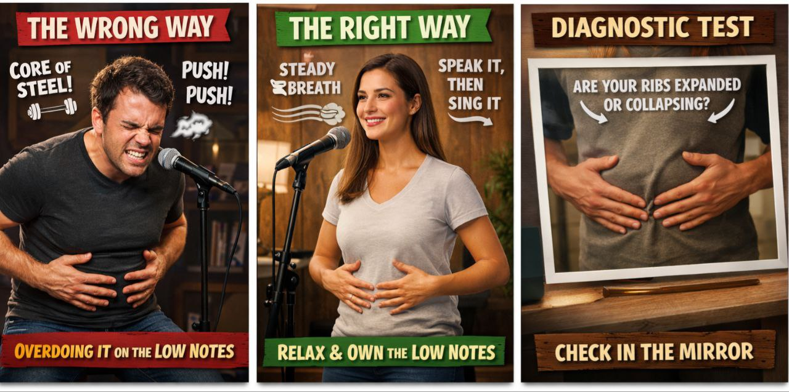

Welcome to the Rustwood Vocal Gymnasium.
Now let’s talk about one of the biggest traps singers fall into when it comes to low notes. A lot of people think that because a note sounds deep, rich, and heavy, it must need a heap more effort to produce. So what do they do? They start bracing their stomach like they’re about to lift a fridge, push a mountain, or win some kind of secret abdominal Olympics.
And that’s usually where it all starts going wrong.
The truth is, low notes are not meant to feel like hard labour. They’re not something you should have to wrestle into place. In fact, one of the biggest mindset shifts a singer can make is realising that the lower part of the voice often works better with less force, not more.
When you go down into your lower register, your vocal folds are naturally thicker, shorter, and a bit more relaxed than they are on higher notes. That means they do not need a massive blast of air pressure to get moving. So if your torso feels like it’s doing overtime just to hold a low note, the problem usually is not that the note is too hard. It’s that your body is trying to do far too much for something that actually needs a steadier, calmer approach.

There are two common mistakes here. The first is pushing too much air. Because the note sounds heavy, singers often bear down through the stomach and force extra pressure upward. That usually makes the sound breathy, unstable, and harder to hold. It’s like trying to fill a teacup with a fire hose. The second mistake is trying to fake depth by pushing the larynx down. That can make the sound darker for a moment, but it often ends up swallowed, tight, and a bit dopey. Not rich and powerful. More like you’re singing after someone wrapped your throat in a wool blanket.
A Better Low-Note Strategy
A much better way to think about low singing is this: steady, supported, and natural.
Let the breath move slowly instead of shoving it out. Keep the ribs expanded instead of collapsing the second you start the phrase. Stay upright through your posture, because just because the note goes down doesn’t mean your chest should. And one of the best tricks of all is to stop over-singing it. Speak the lyric first in a strong, natural voice, then sing it with that same speech-like coordination. That’s often where the magic is. Your lower register is closely tied to the speaking voice, and the more natural it feels, the better it usually works.
If a low word still feels weak or clunky, try narrowing the vowel a little. Sometimes that tiny adjustment is enough to help the sound stay focused without leaking too much air.
At the end of the day, your low register should feel grounded, resonant, and easy to trust. It should not feel like a full-body emergency. If everything is working well, those low notes should feel more like settling into a strong chair than hanging off the edge of a cliff.
So here’s a simple test. Stand in front of a mirror and sing the lowest phrase of the song. Put your hands on your lower ribs as you do it. Are they staying open and buoyant, or are they collapsing inward the moment you start the note? That one little clue can tell you a lot about what’s really going on.